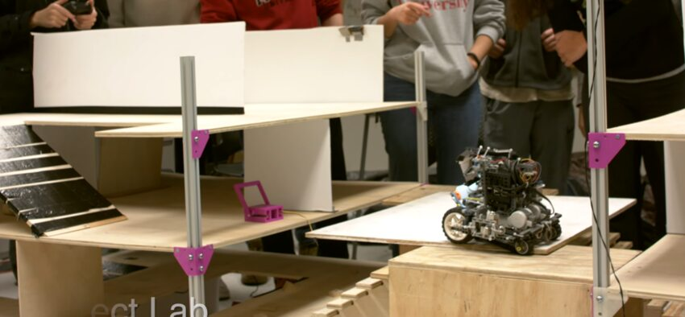
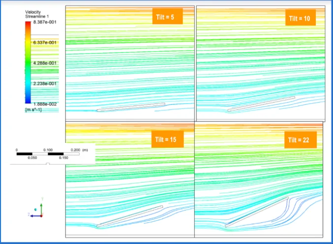

An open-source ROS framework for quadrupedal locomotion developed at CMU’s Robomechanics Lab. Quad-SDK integrates planning, control, and state estimation through shared simulation and hardware interfaces. ROS 2 integration and a C++ policy runtime support deployment of learned controllers on Unitree quadrupeds.
A locomotion policy uses per-leg recurrent encoders to infer entanglement from joint motion and estimated torques. Contact supervision and release rewards train the policy to free caught legs. Unitree Go2 trials in bungee rigs and natural underbrush compared decoded contact estimates against video of catches and releases.
Reinforcement Learning
Recurrent Encoders
Latent Representation
Contact Estimation
Hardware Validation
Duty Factor Predicts Robust Constrained Quadrupedal Locomotion Across Gait Types
Jun 2026 – Sep 2026 · Robomechanics Lab
Duty factor, the fraction of a stride each foot spends in contact, predicted robustness across gait types and controllers. A learned selector adapts duty factor to narrow stances. Hardware validation comprised 45 Unitree Go2 trials on a 15 cm beam using centroidal MPC without dedicated balance actuation.
Microtaur: Harmonic Gait Transfer Across Spine Morphologies
Sep 2026 · Robomechanics Lab
PPO discovers periodic gaits for rigid, roll, pitch, and yaw spine configurations. Offline Fourier fitting converts each policy’s motor targets into a morphology-specific central pattern generator. The resulting embedded controller replays coordinated joint commands at 50 Hz using a shared clock and fixed coefficients, without state estimation or neural-network inference.
Pengu uses penguin-inspired body proportions and a feedforward waddling gait to walk on low-friction surfaces. The gait rolls the body over the stance foot to reduce the tangential force required at contact. The study characterizes viable gait parameters on surfaces with friction coefficients as low as 0.1.
Apr 2025 – May 2025 · CMU 15-494 Cognitive Robotics · Prof. Dave Touretzky
A VEX AIM robot guides visitors through two model galleries. GPT interprets spoken requests and uses onboard camera images to answer questions about artwork. A Python finite-state machine dispatches structured commands for speech and navigation, using ArUco marker poses to approach exhibits and mapped doorways to move between galleries.
Nov 2024 – Dec 2024 · CMU 16-384 Robot Kinematics and Dynamics · Prof. Jeffrey Ichnowski
A Franka arm picks up markers and draws lines and spline arcs on a tilted whiteboard calibrated by hand-guiding the arm. The planner uses modified Denavit–Hartenberg kinematics and Jacobian pseudoinverse IK to convert Cartesian spline trajectories into joint commands streamed at 50 Hz.
Aug 2024 – Dec 2024 · CMU 24-451 Feedback Control Systems · Prof. Sameer S. Shroff
A receding-horizon steering controller uses a linearized vehicle model and quadratic programming to minimize lateral and heading errors under steering angle and rate limits. The controller compensates for actuation delay by propagating the vehicle state through buffered steering commands and reconstructs predicted trajectories in global coordinates for comparison with the reference path.
MATLAB
Model Predictive Control
Quadratic Programming
Delay Compensation

Urban Search and Rescue Robot
Jan 2023 – May 2023 · CMU 16-311 Introduction to Robotics · Prof. Howie Choset
A teleoperated ROS 1 mobile manipulator built for a staged search-and-rescue obstacle course. The robot navigates ramps and raised platforms, uses inverse kinematics to position its arm, and detects objects through image segmentation and flood fill.
ROS 1
Inverse Kinematics
Computer Vision
OpenCV
Python
Teleoperation
Dead Reckoning
Trajectory Optimization
PID Line-Following Robot
Nov 2021 · CMU 24-101 Fundamentals of Mechanical Engineering · Prof. Mark Bedillion
A mobile robot uses a downward-facing optical sensor to detect the dark line against the white surface. An Arduino runs a PID controller that adjusts steering based on the robot’s offset from the line.
PID Control
Mobile Robotics
Arduino
Laser Cutting

Optimization Under Constraints of Rooftop Solar in High Winds
Jun 2019 – Dec 2019 · The ISF Academy
This project compared simulated airflow around rooftop solar panels at four tilt angles to study panel placement under high-wind constraints. Presented at AGU 2019.